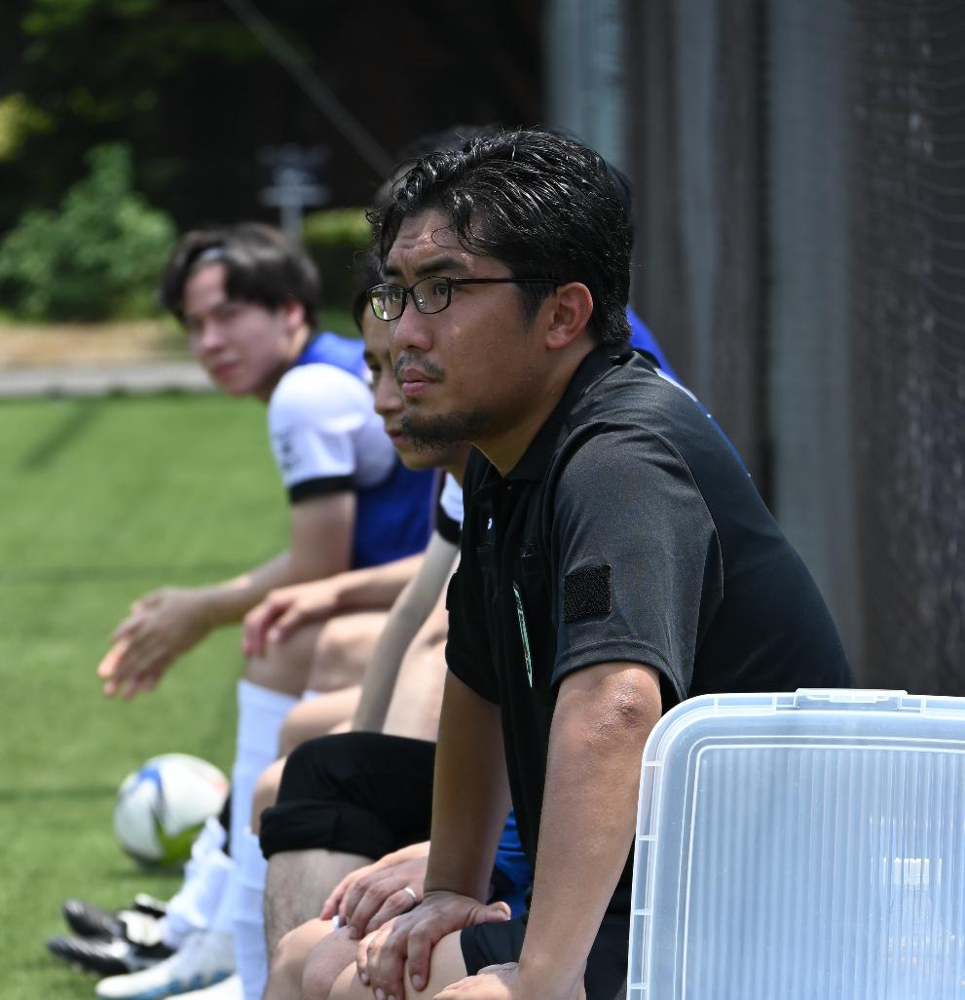
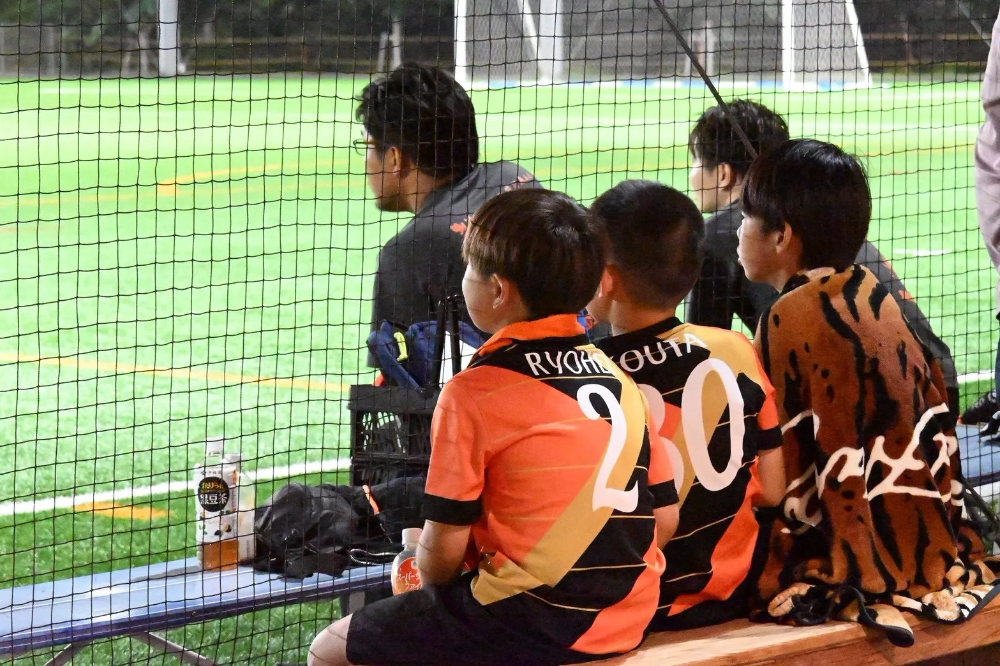
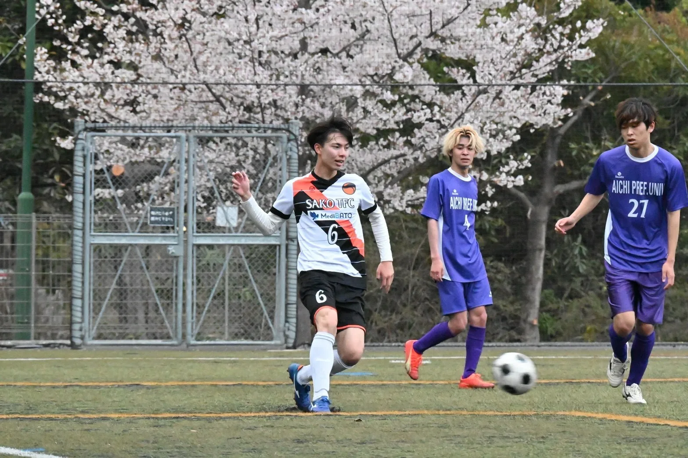
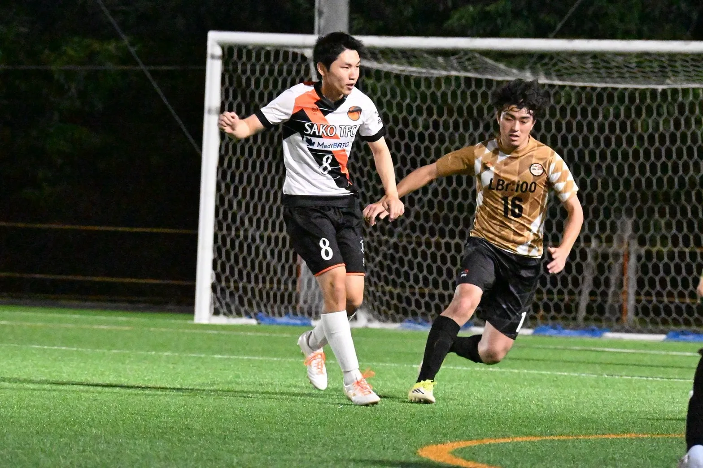
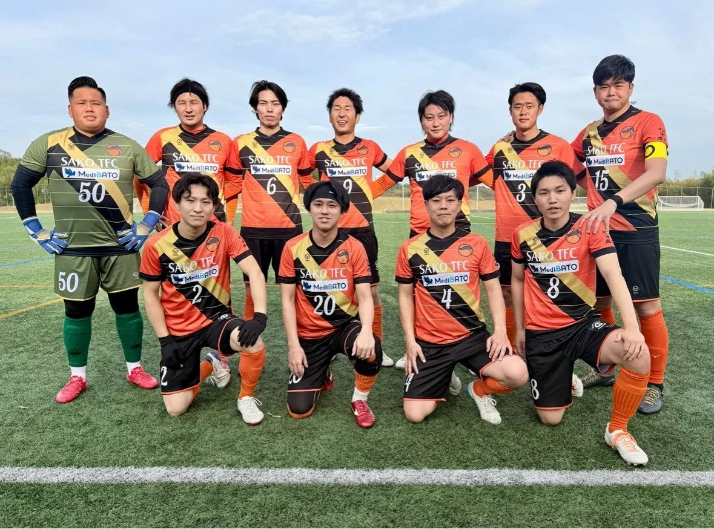
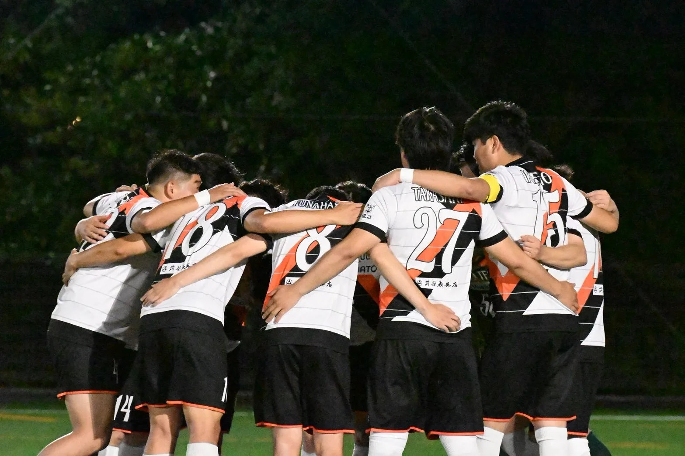

未来を、いっしょに。
夢中になれる時間を。仲間と戦った思い出を。
栄生から、次の未来へ。
NAGOYA / SAKO / FOOTBALL CLUB
未来を、いっしょに。
夢中になれる時間を。仲間と戦った思い出を。
栄生から、次の未来へ。
夢中になれる時間が、力になる。
笑って、悔しがって、また挑戦する。
サッカーを通して、心も身体も育てていく。
仲間となら、もっと遠くへ。
一人では見られない景色を、チームで目指す。
今日の一歩が、未来の自信になる。
世代を越えて、ひとつのクラブへ。 トップチームの選手も育成年代の指導に関わり、子どもから大人までサッカーでつながるクラブを目指しています。
WHAT WE VALUE / 私たちが大切にするもの
目標を決める。挑戦する。振り返る。
自分で成長を続けられる力を、サッカーの中で育てます。
目の前のプレーに、最後までひたむきに向き合う。
仲間も相手も、自分とは違う一人の人として向き合う。
できないことから逃げず、失敗を恐れず、まずやってみる。
プレーできる環境と、支えてくれるすべての人を忘れない。

OUR STORY / オーナー・コーチの想い
4歳から始めたサッカーは、ずっと人生のそばにありました。小学生では全国大会を経験し、高校まで選手としてプレー。大学では学連スタッフとして、今度はサッカーを支える側から関わりました。
大学卒業後は名古屋のコンサルティング会社へ。研修講師や経理代行など、企業を支える仕事に携わる一方、地域の飲食店を巡り、そこで出会った仲間たちと過ごす時間を大切にしていました。
年齢も仕事も違う人たちが、一つの場所に集まり、自然と仲間になっていく。そんな人とのつながりと、「いつかサッカーに関わる仕事がしたい」という想いが重なり、サッカー好きが集まれる「たまりBar」をオープン。同時に、長年の夢だった栄生TFCの運営を始めました。
この地域の子どもたちにも、
サッカーをする場所をつくりたい。
本気で勝利を目指すトップチームを運営するなかで、その想いは次第に強くなりました。サッカーが上手くなることはもちろん、自分で目標を決め、考え、挑戦し、振り返る。仲間と行動することや、自分で成長を続ける力も、サッカーだからこそ育てられると考えています。
子どもから大人まで、サッカーを通して人がつながり、人が育っていく。そんなクラブを、この街につくっていきます。
CAREER

10MFPLAYER
7FWPLAYER
4DFPLAYER
1GKPLAYER試合・練習・日々の活動はこちらから。
体験の日程や活動についてなど、気になることがあれば気軽にご相談ください。LINEからの体験・入団のご相談も歓迎しています。
パートナーの皆様へ
栄生TFCは、企業・個人の皆様のご支援により、選手たちの成長と地域貢献活動を続けています。

TOGETHER,TRY / JOIN / CONTACT
体験練習・入団・その他のお問い合わせを、ひとつのフォームから受け付けています。